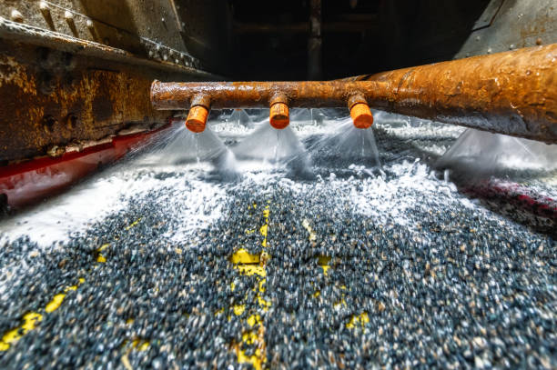

Mineral Processing
At Caleb Analytical Solutions, we provide expert-level mineral processing services aimed at enhancing resource efficiency and improving beneficiation outcomes. With a strong foundation in mineralogy and process engineering, our team offers tailored solutions to address the unique needs of each client, whether you're in mining, metallurgy, or environmental monitoring.
Our approach combines laboratory-based mineral separation techniques, particle size analysis, and flow sheet design to evaluate and optimize ore treatment processes. We help our clients improve recovery rates, reduce waste, and streamline operations by applying data-driven insights and innovative processing methods.
We utilize advanced tools like XRF, SEM, and gravimetric analysis to fully characterize ore properties and determine the most effective processing strategies. Whether you're exploring new mineral sources or troubleshooting an existing plant process, we deliver actionable recommendations and testing backed by deep analytical understanding.
Caleb Analytical Solutions is committed to helping clients achieve operational excellence through mineral science. Partner with us for reliable data, expert interpretation, and a strategic edge in resource utilization.